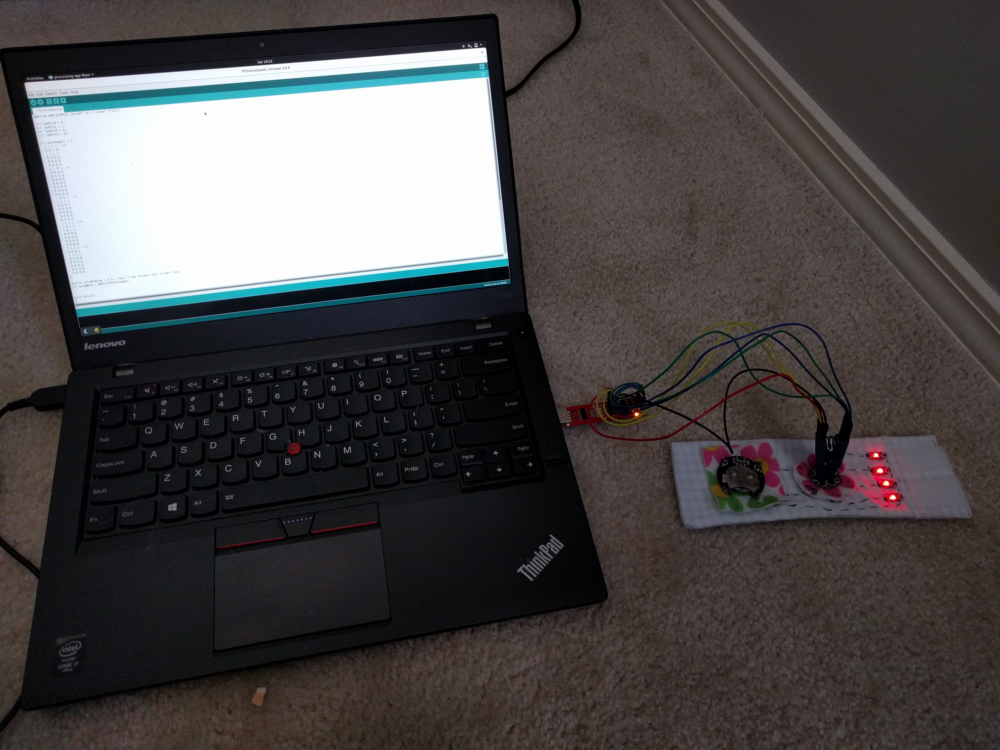

Light Painting with LilyPad
Persistence Of Vision
- The human eye can see an after image for 1/25 of a second
- Movies - many frames at high speeds looks smooth
 https://68.media.tumblr.com/2033eaae01ce617dd1c04fdd69f0cb07/tumblr_njqf143ISd1qd479ro1_500.gif
https://68.media.tumblr.com/2033eaae01ce617dd1c04fdd69f0cb07/tumblr_njqf143ISd1qd479ro1_500.gif
Persistence Of Vision + Technology = Writing Words in the Air
Let's do it Portably and Fashionably
LilyPad

https://upload.wikimedia.org/wikipedia/commons/e/ea/Lilypad_Arduino_with_fading_LEDs.jpg
LilyPad
- Washable
- Programmable
LilyTiny

- $5
- 4 Programmable Outputs
LilyTiny with LEDs

Programming the LilyTiny
Setup()
void setup()
{
// Set each Pin to OUTPUT mode, we are writing data out
// if we are reading sensor data we would set it to Input
pinMode(ledPin0, OUTPUT);
pinMode(ledPin1, OUTPUT);
pinMode(ledPin2, OUTPUT);
pinMode(ledPin3, OUTPUT);
}
printWord()
// Take in an array of "words" and flash the LEDs
void printWord(int wordVar[]) {
int numRows = sizeWord/4;
for(int j=numRows-1; j >=0; j--) {
for(int i=0; i<4; i++) {
digitalWrite(i, wordVar[i+j*4]);
}
delay(columnDelay);
}
}
void loop(){
printWord(povImage);
} povImage[]
//Turn you head 90 degrees to see the word
int povImage[] = {
1,1,1,1, //H
0,0,1,0,
1,1,1,1,
0,0,0,0,
0,0,0,0,
0,0,0,0,
1,1,0,1, //i
0,0,0,0,
0,0,0,0,
0,0,0,0
};
Load the code to the wristband
Wave your arms
Common Problems:
- I can't see words
- Is it dark enough?
- Are you waving fast enough? Increase the delayms variable if you think you're waving too slow, Decrease it if you're going too fast.
- The more letters there are the harder it is to tell them apart.
- My lights are staying on and not flashing
- make sure no threads are touching each other. Turn the battery pack off and on again.